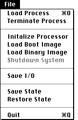

|  |
Load Process
Terminate Process
Initialize Processor
Load Boot Image
Load Binary Image
Shutdown System
Save I/O
Saves the contents of the I/O Window to a File.
Save State
Save State will save the current simulator working environment to the object file. This includes the position of the windows, the current display format of each window, as well as which windows are open and which are closed. The Save State command writes a description of the current state to the MacVAX program’s file. If MacVAX is stored on a write-protected disk or is configured to execute multiple copies from a fileserver, the Save State command will have no effect.
Restore State
Restore State will restore the most recently saved environment. This is useful if you have altered the position and format of windows, and want to quickly get back to a previous state.
Quit
|